P/ECEのMMCでMP3プレイヤー＆
MMC対応カーネル
サポートページ
| 2004/04/26 |
Ver.1.21 | 公開 |
| 2004/05/23 |
Ver.1.21b | データ読み込み関数での不具合を修正し、IODATAの128MBに対応。 |
| 2004/08/29 |
Ver.1.22 | mmcFileReadSctで mmcFileReadSct(&pfa, NULL, sct, 0); とした場合に、内部の代替バッファに何も読み込まれていなかった不具合を修正。 詳しくはmmcif.cを参照して下さい。 |
| 2004/08/30 |
Ver.1.23 | SDカードと初期化に時間がかかるMMCに対応しました。 情報提供をして下さったnsawaさんありがとうございます。m(-_-)m |
| 2004/10/20 | P/ECEの電源電圧で正常に動作しなかったカードを、カードへの電源電圧を調整することで対応しました。参照：可変電源版接続回路基板 |
|
| 2004/10/25 |
Ver.1.24 | 10x10全角フォントの後半が崩れてしまっていた不具合などを修正。 この不具合に関して、情報提供して下さったnsawaさんありがとうございます。m(-_-)m 不具合対応の詳しい解説はこちら |
| 2004/11/02 |
Ver.1.25 | nsawaさんの御要望により、mmcReadSector APIを追加しました。 詳しくは、mmc_api.h等のコメントをご参照ください。 |
| 2004/11/06 |
Ver.1.26 | nsawaさんからの情報提供により、スーパーフロッピー形式のMMC/SDカードに対応しました。 今回の修正の詳しい解説はこちら |
| 2005/04/02 | Ver.1.27 | まるしすさんのかねてからのご要望であった、カーネル側でのpceFile系APIフック（オープン・リード・検索のみ）によるMMC利用機能の追加と、512MB以上1GB以内のMMC/SDカードに対応しました。 カーネル側でのMMC利用機能は、システムメニューからON/OFFの設定が可能で、MMC利用ONの場合、アプリ起動直前にカーネル側でMMCを初期化し、かつ、pceFile系APIをフックし、自動でMMC側も読みにいけるというものです。 MMC利用機能を使えば、MMC非対応のアプリが無改造でMMC側のデータを利用できるようになります。 また、従来のMMCを利用するアプリに対しては、pceAppNotifyにおいて、カーネル側でのMMC初期化の直前に、通知タイプAPPNF_INITMMCにて問い合わせを行うので、カーネル側のMMC初期化が不要な場合、APPNR_SUSPEND or APPNR_REJECTを返してください。 pceFile系APIのフック部分はnsawaさんのMMC/SDカードリーダーライターのソースを利用させていただきました。ありがとうございます。 |
| 2005/04/03 | Ver.1.27b | MMCライブラリのソースを他のプロジェクトでも流用できるようにちょっと整理しました。 |
| 2005/04/05 | Ver.1.28 | nsawaさん改造のMMCライブラリと統合したところで、mmcFileReadSctの、 mmcFileReadSct(&pfa, NULL, sct, 0); としたときの不具合が復活してしまっていましたので、それを修正。 また、mmcFileReadMMCSctでもlenの切り詰め処理を施しました。 |
| 2005/05/01 | Ver.1.29 | システムメニュー終了時にmmcExitを呼んでしまっていた不具合を修正。 MMC機能を利用しているアプリの場合、これによりフックが解除されてしまい、システムメニュー表示後に正しくMMCからファイルを読めなくなってしまっていました。 また、ファイル検索時に扱える最大サイズぴったりのファイルがはじかれる条件式だったのを修正しました。(情報提供:nsawaさん) |
| 2005/05/04 | Ver.1.29b | MMC版MP3プレイヤーの5倍速MMCライブラリ対応にて修正したライブラリの変更点をカーネルのライブラリにも反映。 ついでにPMFプレイヤーでのMMCライブラリも同じモノに差し替え。 これにより、2005/05/04付けで、ようやくカーネルとMP3プレイヤーとPMFプレイヤーでのMMCライブラリのソースの統合ができました（＾＾ ただし、ヘッダーファイルに定義されている扱える最大ファイルサイズの定義はアプリによって変わってくるので、そこだけアプリ固有のものになります。 ほんとは、MMCライブラリを別にして、差し替えとかが簡単に出来た方が良いのかもしれないのですが、まだしばらくはこのままの状態にしておくつもりです。 |
| 2005/05/07 | Ver.1.29c | MMCライブラリを更新しました（MMC対応カーネル・MMC版MP3プレイヤーともに）。 扱う最大ファイルサイズがカード容量を超えている場合、最大ファイルサイズをカード容量のサイズに切り詰めるようにしました。 これにより、64MBのカードで50MB以上のファイルが扱えなかった不具合が修正されましたが、MMC対応カーネルとMMC版MP3プレイヤーでは関係ありません（＾＾； 今回はMMCライブラリの更新のみで特に機能的にも変化が無いので、カーネルのヴァージョンもVer.1.29cとしておきます。 |
| 2005/07/09 | Ver.1.30 | MMCライブラリのpceFileReadSctとpceFileReadMMCSctでファイルサイズを超えてアクセスした場合のチェックが上手く動いていなかった不具合を修正しました。 |
| メーカー | 種類 | 容量 | カード情報画像 | 備考 |
| SanDisk | MMC | 16MB | ||
| MMC | 32MB | 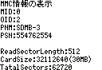 |
||
| MMC | 64MB | 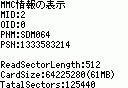 |
||
| miniSD | 32MB | 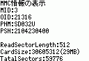 |
||
| IODATA | MMC | 16MB | 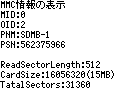 |
注意！！ 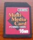 可変電源版接続回路基板が必要です |
| 128MB | 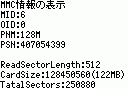 |
|||
| BUFFALO | SD | 32MB | 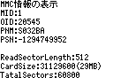 |
|
| ADTEC | SD | 64MB | 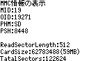 |
|
| miniSD | 16MB | 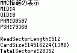 |
||
| 128MB | 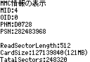 |
|||
| Panasonic | SD | 8MB | 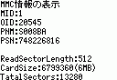 |
|
| TOSHIBA | SD | 32MB | 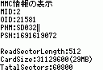 |
|
| miniSD | 16MB | 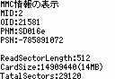 |
携帯電話に付属 | |
| Canon | SD | 8MB | 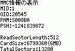 |
デジタルビデオカメラに付属 |
| Vodafone? | SD | 8MB | 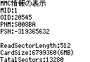 |
携帯電話に付属 |
| A-DATA | MMC | 64MB | 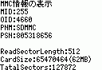 |
注意！！ 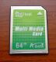 可変電源版接続回路基板が必要です |
| SD | 128MB | 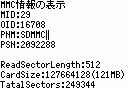 |
||
| 1GB | 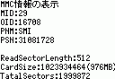 |
|||
| miniSD | 512MB | 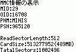 |
||
| ハギワラシスコム | SD | 256MB | 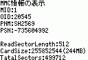 |
|
| M&S | SD | 256MB | 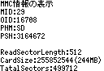 |
|
| PQI | SD | 512MB | 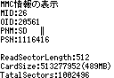 |
New!! |
動作確認済みカードのカード情報画像募集中！
画面は簡易チェックアプリで（＾＾
| メーカー | 種類 | 容量 | カード情報画像 | 状況 |
| Panasonic | SD | 64MB | 取れません | FAT16でフォーマットしても、初期化に失敗するらしいです。 |
| HITACHI | MMC | 16MB | 取れません | 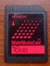 FAT16でフォーマットしても、初期化に失敗します。現在調査中。 |
動作不可報告も募集中です！
今後、調査により動作可能になるかもしれませんが、とりあえず新規でカードの購入を考えている方はこれらのカードを避けてください。
動作不可状態のカードは、もし送って頂ければ、こちらで調査させて頂きますので、御連絡ください。
調査の際にはフォーマットする可能性が大ですので、あらかじめ御了承ください。
以下のアーカイブはすべてソース付きです（＾＾
・MMC版MP3プレイヤー
（MMCライブラリをMMC対応カーネルVer.1.30のものに合わせました。New!! 2005/07/09更新）
mmc_mp3_2005_0709.zip（1.09MB）
・MMC対応カーネル Ver.1.30（MMCメニュー付き）
New!! 2005/08/02 ReadMe更新
MMCライブラリの不具合を修正しました。機能的には変わりはありません。
mmc_pcekn_2005_0802_v130.zip（1.15MB）
※最新のMMC対応アプリ「P/ECEで動画プレイヤー」を公開しました。
なんとP/ECEで音声付動画が見れちゃいます！
MP3プレイヤーとあわせてお楽しみ下さい。
DL&解説はこちらから（＾＾
| ・ | MMC版MP3プレイヤーの説明 安くなった64MB以上のカードならアルバム丸ごと入っちゃいます。 5倍速MMCライブラリに対応しましたので、途中で切れてしまったりしたMP3も再生できるようになったかも（＾＾ |
| ・ | MMC対応カーネルの説明 このカーネルをインストールすると、MMC/SD機能で標準P/ECE用のアプリも無改造でMMC対応に！ （プログラムの組み方によっては対応できないものもあるかも（＾＾；） MMC上からpexを起動することも出来るので、余った8MBや16MBのMMC/SDカードでも100本以上のゲームやプレイヤーアプリが1枚のカードに入ります。こりゃ便利。 2005/08/02追記 重要なことを今の今まで書き忘れていましたが(日記では何度か書いていますが)、MMCカーネル及び、MMCライブラリでのMMC制御機能は、データの読み出し（オープン、リード、検索）のみに対応しています。 P/ECEプログラムからのMMC/SDへのデータの書き込みおよび、ファイルの新規作成・削除はできませんので、あらかじめ御了承ください。m(_ _)m MMC/SDへのデータの書き込みは、市販のカードリーダーライターを利用するか、nsawaさんのMMC/SDカードリーダーライターアプリをご利用ください。 |
| ・ | 番外：P/ECE HandBook Vol.2 3大ゲームのMMC対応改造法 |
１．接続基板を製作します
<利用する主な部品>
・カードソケット基板
サンハヤト CK-16（MMC用）
サンハヤト CK-29（SD用 MMCも利用可）
・その他
抵抗 51KΩ 2本
積層セラミックコンデンサ 0.1μF(104) 1個
ユニバーサル基板 1枚
ピンヘッダ＆ピンソケット カードのピン配置を見て適宜決めてください
ビニル線 適当
<回路図>
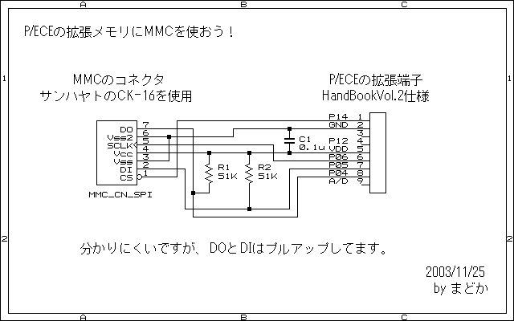
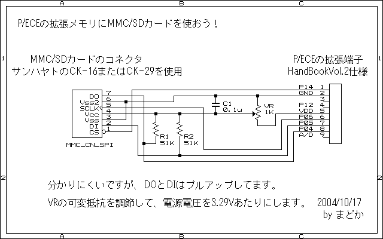
| ●接続基板の製作例● サンハヤト CK-29を使用しています （ちょっとぐらぐらしますが（＾＾；） |
|
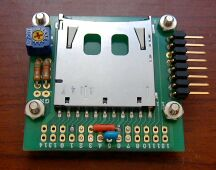 |
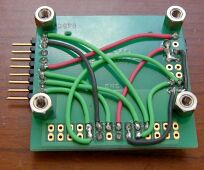 |
| 接続基板 表 | 接続基板 裏 |
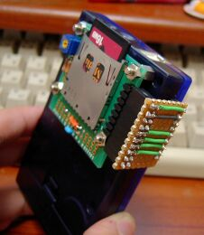 |
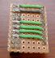 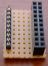 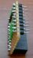 接続基板とP/ECEを つなぐためのコネクタ （裏・表・横） |
| P/ECEに装着！ | |
デジカメや携帯電話で使用していた状態のままではフォーマットがFAT16ではない可能性が高いので、カードを利用する前には必ずWindows側でフォーマットを行ってください。
32MBより小さい容量のカードですと、普通にフォーマットするとFAT16ではなくフロッピーディスクなどと同じFAT12でフォーマットされてしまうので、以下の方法で確実にFAT16でフォーマットしてください。
32MB以上のカードでもちゃんとFAT16でフォーマットできたかどうかが不安な場合は以下の方法でフォーマットした方が無難です。
<FAT16でのフォーマット方法>
・MMC or SD or miniSDがXドライブにある場合（Windows2000/XPでのやり方です）
コマンドプロンプト（DOS窓）にて
>FORMAT X: /FS:FAT /A:1024
と、入力し、画面の指示に従ってフォーマットを行います。
この時最後に「16ビット : FATエントリ」と表示されます。
「12ビット : FATエントリ」等になっている場合は失敗です。
もう一度フォーマットをやり直してください。
（情報提供：nsawaさん）
※2005/01/16 追記
上記のやり方のFAT16でのフォーマットは、通常は32MBより小さい容量の場合にのみ行うようにして下さい。
32MB以上のカードの場合は、カードライターが認識されているドライブを右クリックして表示されるメニューから「フォーマット」を選択して行ってください。
ちなみに、128MB以上のカードで、上記の/A:1024をつけてやるやり方ですとクラスタサイズが小さすぎるというエラーがでてしまいます。
これは、/A:1024というオプションがクラスタサイズを1024バイトに指定するためのもので、128MBではクラスタサイズを2048にしないといけないためにエラーになってしまうわけです。
また、256MBのカードの場合はクラスタサイズを4096にしないといけないのですが、よく判らない場合は
＞FORMAT X: /FS:FAT
として普通にフォーマットしてください。自動的に適切なサイズでクラスタサイズが設定されます。
MMC版MP3プレイヤーに付属の、簡易MMCチェックアプリ”mmc_pce.pex”をP/ECEに転送し、実行します。
チェックアプリの場所は、MMC版MP3プレイヤーアーカイブ内の\USB通信でのテスト\Piece側\mmc_pceフォルダ内にあります。
このアプリはMMCの初期化とカード情報の表示、ファイル一覧の表示などを行います。
このアプリで正常に情報が表示されない場合は、接続基板や拡張端子側に問題があるか、使用しているカードがMMCライブラリ未対応のもの、もしくはフォーマット不良ということになります。
４．MP3を作成
MMC版MP3プレイヤーのベースとなったnsawaさん作のMP3プレイヤーでは通常のWindows等で聴く圧縮形式のMP3では、処理が追いつかない等の理由により聴くことができません。
そこで、LAMEなどの変換アプリを利用して、32kHz 48kbpsまたは32kHz
32kbpsの形式に変換します。
<LAMEでの変換方法の例：32kHz 48kbps>
>lame --resample 32000 -m m 入力ファイル名
出力ファイル名
※この他のフォーマットについては、LAMEのヘルプをご参照下さい。
ちなみに、LAMEのヘルプは、
>LAME -?
で見れます。
変換したMP3ファイルを市販のメモリーカードライターを利用して、カードに書き込みます。
※カードライターではファイルの書き込みに遅延書き込みという処理が行われている場合があり、コピーした内容がすぐには書き込まれないことがありますので、注意してください。
2005/05/07 追記
ちなみに、MMC版MP3プレイヤーのパッケージには、複数のMP3ファイルを一気にLAMEを使って32kHz
48kbpsに変換するバッチファイルも同梱してありますので、よろしければお使いください。ソースフォルダ(MMC_de_MP3\mp3play)内のconv_mp3_32_48.batというファイルがそうです。
変換元のMP3とLAMEとこのバッチファイルを一緒のフォルダに置いて、バッチファイルをダブルクリックすることで、自動的に"mp3_32_48"という名前のフォルダが作成され、その中に変換後のMP3ファイルが出力されます。
P/ECEでは全角文字が使用できませんので、MP3のファイル名は全て英数字でお願いします。
５．MMC版MP3プレイヤーをP/ECEで実行
さあ、最後はお待ちかねのMP3プレイヤーの実行です。
1～４までの作業が正しく行われている場合、接続基板を装着し、カードを挿した後、MP3プレイヤーアプリを実行すれば、お望みのMP3が聴けるようになっているはずです（＾＾
６．応用 MMC対応カーネルのインストール
MP3を聴くだけでしたら、MMC版MP3プレイヤーだけで十分なのですが、せっかくの大容量メモリーカードをP/ECEのゲームに利用したい場合は、MMC対応カーネルをインストールする必要があります。
インストールの手順に関しては、冒頭のReadMeなり、付属のドキュメントを参照していただくことにして、ここでは注意点のみを書いておきます。
まず、MMC対応カーネルをインストールするには、P/ECEのフォントデータを再配置させる必要があります。
再配置の詳細な方法は、MMC対応カーネルアーカイブ内のupdateフォルダにあるmakefileを参照してください。
フォントの配置を変えると、従来のカーネルでは正しく文字が表示されないので、今後の作業には注意が必要です。
ちなみに、フォントの再配置もカーネルのアップデートも、まず何かメッセージが表示されたらとりあえずAボタンを押してください。
アップデートの手順は一番最初のフォント再配置の手順とみんな同じですので、最初の手順を良く覚えておくようにして下さい。
カーネルのアップデートは、コマンドプロンプト（DOS窓）のUpdateフォルダ上から、
>make bios
とすることで、フォントの再配置と同じ要領でアップデートできます。
アップデートに成功した場合、フォントは正しく表示され、スタートボタン長押しのメニューでVer.が最新のものになっていることを確認してください。
もし、失敗した場合は、もう一度作業をやりなおすか、念の為MMC対応カーネルアーカイブ内の\sysdev\pcekn_mmcフォルダ内からコマンドプロンプトで
>update
とし、カーネルを再コンパイルしてアップデートしてみて下さい。
ちなみに、P/ECEをオフィシャルのカーネルに戻す場合は、P/ECEの\usr\PIECE\binフォルダに入っているwinpku.exeで右下の「全領域（ファイルシステムを含む）をアップデート」にチェックを入れて、Ver.1.20等にアップデートし直してください。
この時、全てのファイルが消えてしまうので、注意してください。
2005/04/03 追記
MMC対応カーネルVer.1.27から、アプリ起動時にカーネル側で自動的にMMCを初期化し、かつ、pceFile系APIをフックして、pceFile系APIを普通に呼ぶだけで勝手にMMCの方までファイルを読みに行く機能が追加されました（＾＾
この機能を利用すると、MMC非対応のアプリが無改造でMMC対応になっちゃいます。こりゃ便利（笑）
ただし、アプリの組み方によっては、何度もMMCの方のデータを読みに行って重くなってしまう場合もあるので、ご注意ください。
また、この機能はStartボタン長押しのシステムメニューにてON/OFFの制御ができますので、必要な時だけONにしてくださいね。
ちなみに、P/ECE起動時のデフォルト設定はOFFとなっています。
この設定は、他のボリューム設定やコントラスト設定同様に電池を入れていないと忘れてしまいますので、その点は御了承下さい。
すでに、MMCライブラリやカーネルのMMC制御APIを利用しているアプリに関しましては、一応そのままでも動くようには配慮してありますが、pceAppNotifyにてアプリ起動時のMMC初期化の有無を問い合わせしていますので、以下の様にしてカーネル側でのMMC初期化を拒否することができます。
//---------------------------------------------------------------------------
int pceAppNotify(int type,int param)
{
//MMC対応カーネルVer.1.27以降での処理
//カーネル側でのMMC初期化を無効にする
if(type == APPNF_INITMMC)
{
return APPNR_REJECT;
}
return APPNR_ACCEPT; //他の通知は許可
}
//--------------------------------------------------------------------------- |
○上手く動かないときのチェック項目
| ・ | 拡張端子はすべて正常につながっていますか？ | |
| → | P/ECE Handbook Vol.2のＬＥＤ基板を試してみる。 参考リンク | |
| → | 拡張端子の2番ピン（ＧＮＤ）の電圧が0V付近で、5番ピン（ＶＤＤ）の電圧が3.3Ｖ付近になっているかをテスタで調べる。 | |
| ・ | 接続基板の配線は大丈夫ですか？ | |
| → | 回路図と、カードソケット基板の接続関係をチェック。 | |
| → | すべてのピンをテスタで導通チェック。 | |
| ・ | メモリカードはFAT16でフォーマットされていますか？ | |
| → | FAT16でフォーマット。 | |
| ・ | メモリカードが動作確認済みのものですか？ | |
| → | もし一覧にない場合はまどかまで連絡してみてください。 | |
| ・ | MMC版MP3プレイヤーおよびMMC対応カーネルは最新版ですか？ | |
| → | 最新版を使ってください。 | |
なにか判らないことがありましたら、遠慮なくまどかまで御連絡ください。